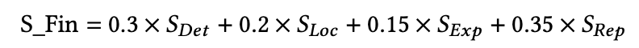
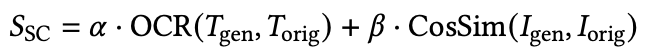
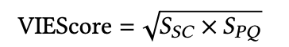

Challenge Significance
As AI-generated content (AIGC) evolves rapidly, text-centric image manipulation intensifies threats to media credibility, while existing forensic research remains disproportionately focused on facial Deepfakes. The GenText-Forensics Challenge aims to:
- Bridge the research gap by establishing the first AI security challenge dedicated to text-centric multimedia forensics, shifting focus from under-explored text forgery to a unified adversarial framework.
- Enable robust benchmarking by leveraging the newly released RealText-V2 dataset—a large-scale, multilingual benchmark covering diverse real-world scenarios—to accelerate the development of defensive strategies.
- Align with "AI for Good" by integrating offensive and defensive perspectives to raise awareness of AI-generated text-centric forgeries and foster robust, explainable solutions within the ACM MM mission.
Competition Rules and Incentives
1. Participation Guidelines
a) Model Submission Requirements
- Each team is permitted only one final model submission per track. Models must simultaneously address the required tasks for their respective tracks (e.g., in Track 1, models must jointly perform detection, grounding, and explanation).
- All models must utilize open-source pre-trained architectures. Teams developing proprietary models during the competition are required to publicly release their model specifications and training protocols under open-source licenses (e.g., MIT, Apache 2.0) during the competition period.
- Winning solutions are required to open-source their full implementation, including:
- Training pipelines and hyperparameter configurations
- Evaluation code with reproducibility documentation
- Final model weights in standard formats
- Violations of these rules will result in disqualification. The organizing committee reserves final authority over all competition-related matters.
- Participants are encouraged to create synthetic data or perform data augmentation based on the official RealText-V2 dataset. Tools and scripts used for such augmentation must be submitted alongside the final solution to ensure reproducibility.
- Violations of these rules may result in disqualification. The organizing committee reserves the final authority over all competition-related decisions.
2. Awards and Recognition
- Monetary Prizes: Substantial monetary awards will be granted to the top-performing teams across both tracks to support their continued research.
- Academic Recognition: Exceptional solutions will be invited for presentation at the ACM MM.
Challenge Content
This challenge consists of two tracks focusing on the Defense (forensic analysis) and Attack (adversarial generation) of text-centric forgeries:
Track 1: Forgery Analysis Report Generation (Defense)
In this track, participants are required to generate a structured analysis report in Markdown format.
- Tasks: Real/Fake Classification (Cla) + Spatial Localization (SL) + Forensic Report Generation.
- Dataset: Built upon RealText-V2, spanning 7 languages and 5 real-world scenarios.
- Evaluation Metrics: The evaluation measures performance across four distinct dimensions: Detection, Grounding, Explanation, and Overall Report Quality via Rubrics. Metrics Definition is as follows:
- Detection (SDet): We use the standard F1-Score to measure the trade-off between Precision and Recall.
- Grounding (SLoc): To evaluate localization precision, we calculate the Pixel-level F1-Score (mF1) and mean Intersection over Union (mIoU) based on the intersection between predicted masks and Ground Truth masks, strictly adhering to the protocol in TruFor.
- Explanation (SExp): This metric evaluates the linguistic quality and semantic fidelity of the generated explanation. We utilize BERTScore to calculate the semantic similarity between the participant's generated text and the expert-annotated ground truth explanation.
- Report Quality Rubrics (SRep): We employ an advanced LLM Judge (e.g., Qwen3-MAX or GPT-4o) to conduct a rubric-based evaluation. We define fine-grained scoring rubrics (normalized to 0-100) covering three critical dimensions: Factuality (accuracy of verdict and evidence), Reasoning (logical deduction from visual clues), and Completeness (coverage of manipulated regions and format compliance). This ensures the evaluation aligns with human expert standards.
The final ranking is determined by a weighted sum of the four components, placing significant emphasis on both the detection accuracy and the overall quality of the forensic report:

Track 2: AIGC Text-Image Editing (Attack)
The objective of this track is to generate high-fidelity, adversarial text forgeries.
This track focuses on the offensive counterpart, challenging models to generate high-fidelity adversarial text forgeries.
- Tasks: Semantic Content Replacement, Non-Latin Character Editing, and Style Attribute Transfer.
- Dataset: High-fidelity adversarial samples generated by advanced AIGC techniques.
- Evaluation Metrics: Measured by VIEScore, which balances semantic consistency and perceptual quality.
- Semantic Consistency (SSC): Unlike facial deepfakes that rely on identity similarity, text forgery requires textual precision. We adapt the SC Score as follows:

- Perceptual Quality (SPQ): Aggregates Visual Fidelity (via MUSIQ) and Anti-Forensics (Attack Success Rate).
The final VIEScore is defined below:
